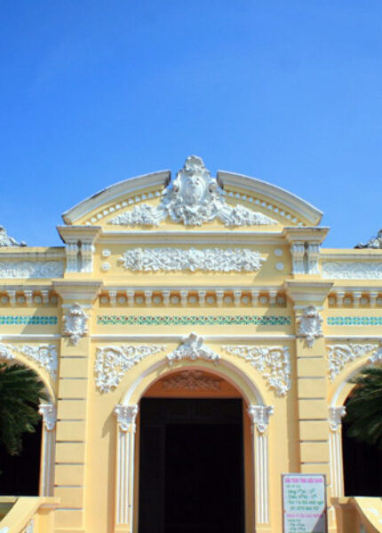

The Local Tales
where your journeys begin
The Local Tales |
|
where your journeys begin |
|  | The Rach Gia people often say "This is the house of the landlord Nhue", because the owner of the house is now Tran Nhue who gave birth to Tran Quang Chieu. This is the oldest and most beautiful house left in this city. With a unique architecture combining Eastern and Western cultures, looking at the house, visitors will feel like they are lost in a French-style villa. The highlight of this house is the decorative patterns and sharp lines with the ingenuity of the artisans. Inside the house, precious wooden furniture and many other artifacts are displayed, creating a splendid and luxurious beauty for the house. |